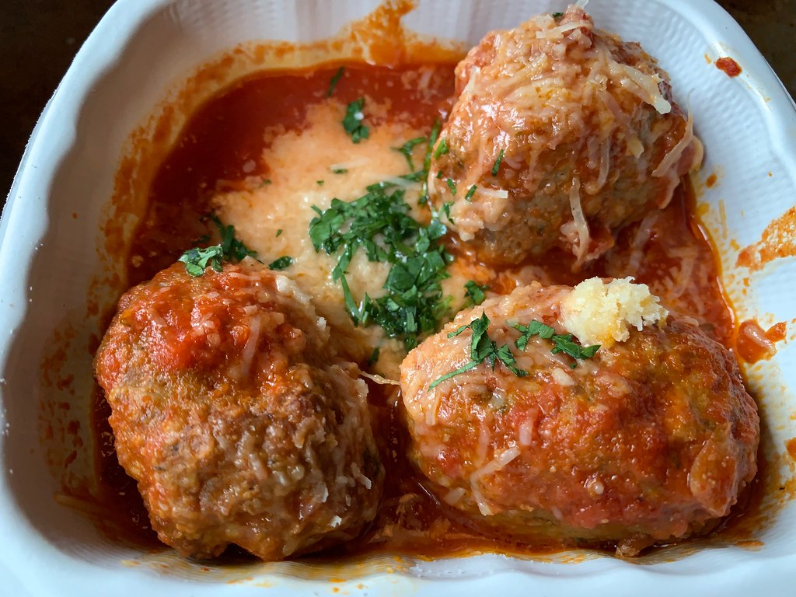
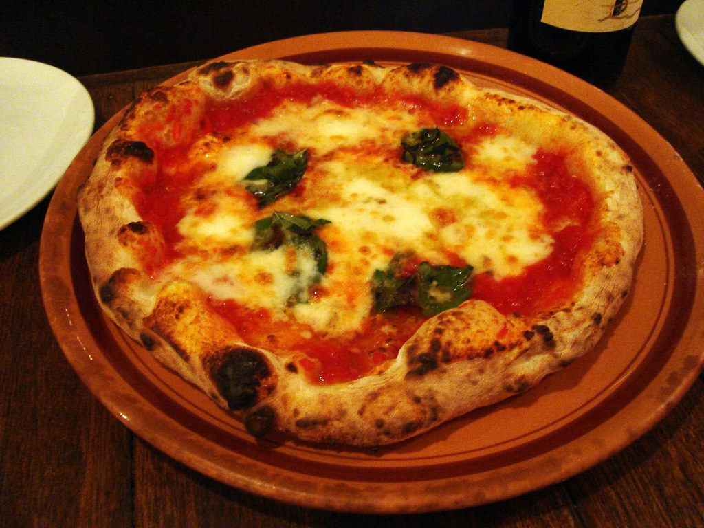

Delicious Italian Recipes
-

Pasta Bake With Sausage
Pasta bake with sausage (baked ziti) is a lazy day lasagna with layers of pasta tossed in a rich meat sauce, layered with mozzarella, and baked. With the side of tomato sauce is amazing. Let's try!'
-

Italian Meat Balls
Meatballs are probably my favorite of all ground beef recipes. These quick, easy homemade Italian meatballs are juicy, flavourful, and delicious. Make them in just 30 minutes.
-
Lemon Chicken Piccata
Quick and easy, creamy lemon chicken piccata is a simple and delicious 30-minute meal made with tender chicken breast in a light lemon sauce with capers.
-
Italian Pasta Salad
Italian pasta salad is delicious, wholesome, and easy to make. Make it up to three days ahead for your summer picnics and cookouts. You can't get more classic than Italian Salad on Memorial Day!
-
Creamy Tuscan Shrimp
Creamy Tuscan shrimp packed with sun-dried tomatoes, spinach, and garlic, is creamy, rich, and delicious. Make it in just 15 minutes, including preparation. Fresh shrimp!!
Let's have a try! -

Skillet Margherita Pizza
Quick and easy skillet Neapolitan margherita pizza has an iconic thin and soft crust with a perfectly crisp exterior, simple and fresh
toppings.